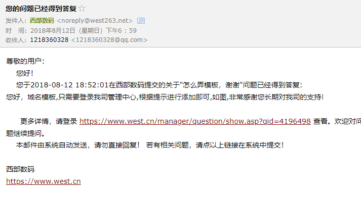

about me
今天来写简介。 嗨多磨！我是王友元，这里是我的博客。 我喜欢二次元，计算机，这里是我的个人空间！
关于本站硬件环境
从虚拟主机→云服务器→独立服务器 大概已经稳定下来了，后续更换可能也只是配置升级
Xeon X5570*2 8C16T CPUDDR3 32 GB 内存240 GB SATA SSD 硬盘20 Mbps 电信数据中心 江苏 镇江
2022/8/16 更换为
- Xeon L5630*2 8C16T CPU
- DDR3 32 GB 内存
- 120 GB SATA SSD 硬盘
- 30 Mbps 电信
- 数据中心 广东
是比较丐的配置了，可能开几个docker就会有压力。但是独服总给我一种安心的感觉，就像自己租了个一室一厅，虽然小，但是自己的独立空间，自己可以管着，不怕室友乱搞弄坏房子
关于文章
博客从2019年疫情开始时居家搭建，最开始因为腾讯阿里都无法审核我的域名实名认证模板（说是与公安部照片不符），以至于只能通过某些渠道买代实名的域名，初为kekeaiai.cn 
右图为初中时弄好的网站，一周后就掉解析，后来才知道要添加实名模板否则会serverHold导致无法使用(哭
后来实名了自己的域名，却因为年龄无法完成备案，周周转转买国外主机，买香港空间，再后来欲求不满入手各种小鸡（虚拟服务器），进了loc混到元老天天关注折扣服务器...
申请谷歌AD后，第一天30IP带来了3点几美元的收入后，我意识到，网站最重要的是流量，而流量来自网站的质量。（结果第二天开始转化量就变成了0.02$ ）
欸欸，就算没有收入，质量还是很重要的啦 所以博客从一开始的资源分享变成了我的个人记录空间，我写一些自己总结的经验和一些钻研历程。
重大转折
个人网站，图片资源是非常难解决的问题，过大的图片导致服务器带宽与硬盘都产生压力。
于是我使用jsDelivr+Github的方式将我的图片存在GitHub中，用免费的jsDelivr CDN调用，美滋滋。 后来接触到原来这种组合还能做成视频床！于是搞了一段时间，导致GitHub被封 所有文章失去配图，只能重开...
滥用是不对的，耍小聪明结果长了个大记性（哭
于是，原本的前端JS,CSS,和所有图片资源，全部被永久的封掉（哭
当时我还写了教程发在B站了，留作纪念吧.. 去看看？小白也能白嫖:jsDelivr+FFmpeg打造切片视频床
后来
后来就是一遍遍的重新开始，重头再来，迫于学业压力一周回一次家，于是博客企划一再搁置。
软件配置
最开始使用的是WordPress+KRATOS 主题
后来用的Typecho，十分的轻量化，那时候因为没钱用的盗版handsome主题，非常抱歉！
再后来又周周转转在WP和TY之间换了好几次，GitHub封号之前在用TY，封号后用了一段时间静态博客程序hexo和Gridea 现在发现wp还是比较好做SEO啊（因为不怎么会优化，只能用现成的
现在
开始的第一步来自脚下，所以我踏上了旅途
同时马上进入大学生活
加油！